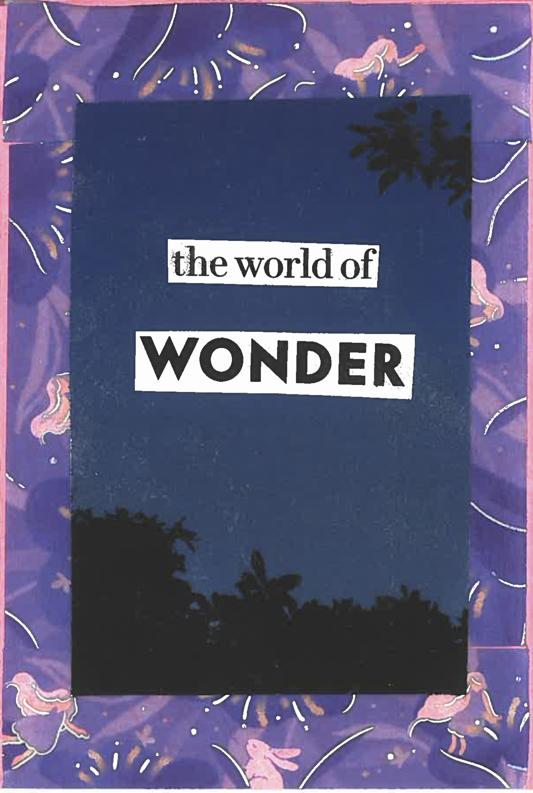

the idea for this zine came from talking to my dear roommates and friends about the weird energy that's been taking over... the energy of SPRING!

i cut up an old vanity fair magazine that got sent to my apartment, meant for the old tenants. i was mainly looking for some nature-y materials to cut up, and i really liked the dusky blue sky with trees peering through.
i hadn't used this washi tape before. i was super drawn to the dreamy, angelic vibe.

the tarot deck from this reading is called "tarot for all ages" ... it's one of my favorite decks that helps me gently reflect and find messages that life leaves for me (and us)

it's wild how grounding a tarot reading ends up being for me. maybe tarot isn't your thing, but i hope you have something that helps you slow down and redirect as needed.

this tarot deck is BEAUTIFUL! these are the cards i pulled during my reading:


the thing about a zine, is that space is confined... want to read the entire tarot reading from my journal?
click ⇾ here ⇽ to check it out
WOAH. i literally got chills when i pulled these two cards one after another in the deck.


take a look at the dreamer and the magician... both adorned in celestial garments made of stars themselves. while the dreamer exists among the clouds, the magician sits peacefully in the grass. may we all find a balance between dreaming and making magic in our day-to-day.
a question for you, dear reader:
what are you dreaming of?
how are you making your dreams come true?

i wrote this last section of the zine 6 days after the first part and the tarot reading. i almost got stuck. i had been feeling a bit overwhelmed, i wasn't quite sure how to wrap it up, and i knew i had a lot of stuff to do even after the content of the zine was finished...
click ⇾ here ⇽ to see the writing, scribbles, and to-do list that helped me bring this little dream of mine to reality.